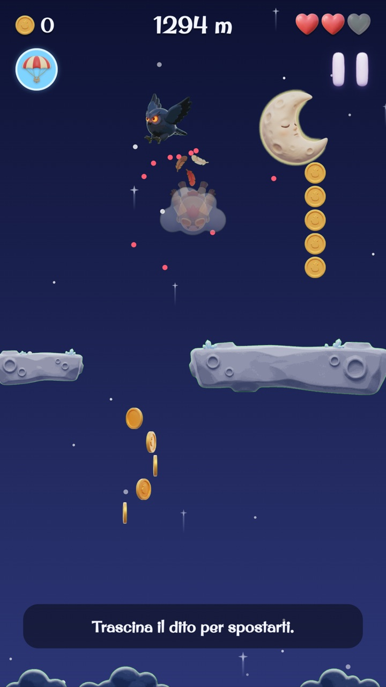
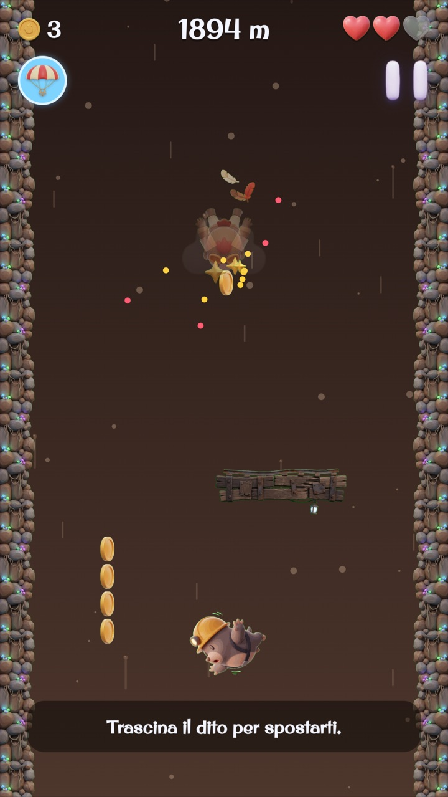
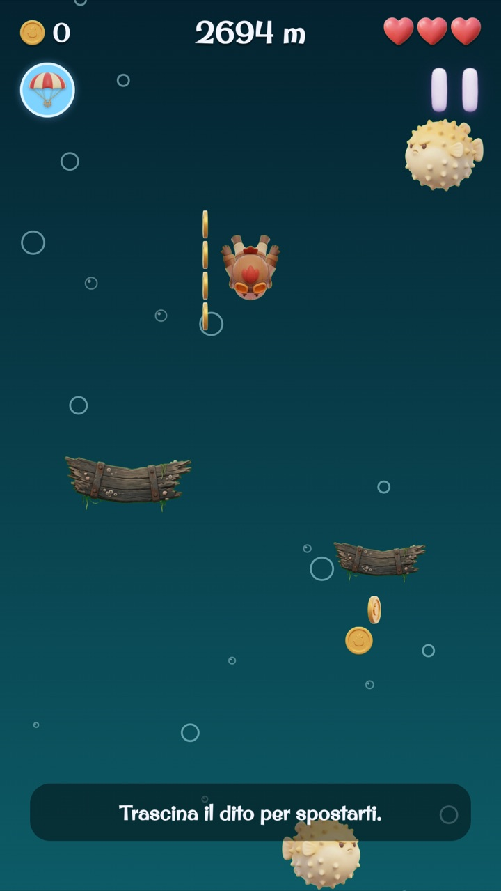
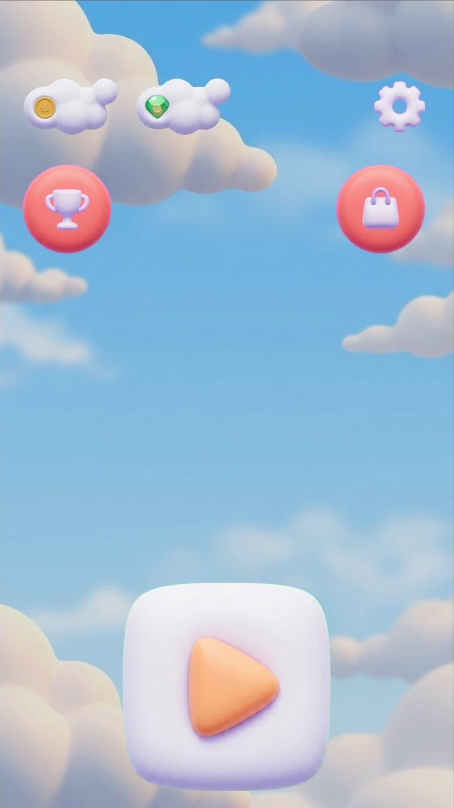
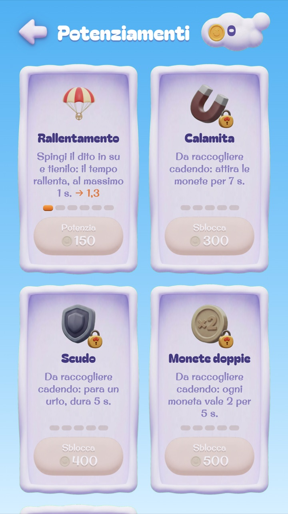

Projekte/Persönlich
In Entwicklung
Chickens don't fly
Ein kleines Handyspiel, um zu erkunden, wie man mit KI arbeitet. Grafik, Interface und Figuren mit Gemini generiert, Code von Claude geschrieben.

Ausprobieren
Das Spiel läuft hier, im Handy. Ziehen, um dich zu bewegen; nach oben schieben und halten, um den Fallschirm zu öffnen.
Mit Ton · fürs Handy gemacht
Im Vollbild öffnen ↗Die Idee
Chickens don't fly ist vor allem eine Erkundung: ein Spiel, klein genug, um es fertigzustellen, um herauszufinden, wie weit man mit KI bei grafischen Elementen, Interface und Character Design kommt.
Figuren, Gegner, Hindernisse, Icons und Interface-Elemente generiere ich mit Gemini. Den Code schreibt Claude nach meinen Vorgaben. Ich entscheide Richtung, Stil und was bleibt, und teste das Spiel bei jedem Schritt.
So wird gespielt
Ein Flieger-Huhn fällt ins Leere und kann nicht fliegen. Ziel ist es, so tief wie möglich zu kommen.
- Du ziehst den Finger, um Hindernissen und Tieren auszuweichen und Münzen zu sammeln.
- Nach oben schieben und halten öffnet den Fallschirm und bremst.
- Mit Münzen kaufst du Power-ups; Herausforderungen bringen Edelsteine.
- Beim Fallen durchquerst du fünf Welten: Himmel, Sonnenuntergang, Nacht, Höhle und Abgrund.





Figuren
Die Hauptfigur entstand aus einer Reihe von Versuchen mit Gemini. Nach der Auswahl ließ ich eine T-Pose generieren, die ich jedem weiteren Prompt als Referenz beilege, damit Posen, Tiere und Objekte im gleichen weichen 3D-Stil bleiben.
Jedes Element wird einzeln auf vollem Grün generiert, dann freigestellt und ins Spiel gebracht.


Interface
Das Menü habe ich selbst in Figma entworfen. Davon ausgehend generierte Gemini Icons, Buttons und Rahmen; die, die sich ohne Verzerrung dehnen mussten, ließ ich im Code nachbauen, damit sie sich der Bildschirmgröße anpassen.
Ich habe zwei Stile ausprobiert, Leder und Wolke: Sie lassen sich in den Spieleinstellungen wechseln. Hier zu sehen: Wolke.


